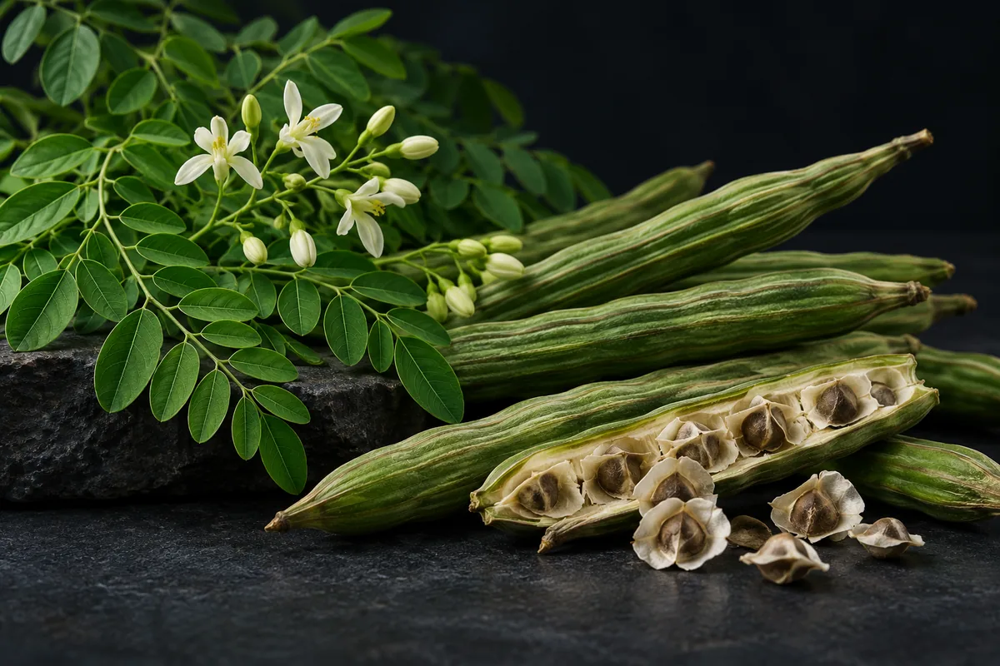

Moringa (folha de Moringa oleifera)
No Brasil, alimento com moringa é proibido desde 2019, e a ANVISA reafirmou isso em setembro de 2026; a meta-análise de 9 ensaios não achou benefício consistente.

Material experimental. Leia antes de usar qualquer coisa daqui.
Nada nesta página é recomendação médica, prescrição ou plano de tratamento. É uma tradução organizada de protocolos que circulam em comunidades de pesquisa e, quando existe, do que ensaios publicados testaram. As duas coisas estão marcadas de forma diferente — e não são equivalentes.
A maior parte dos compostos aqui não tem aprovação da ANVISA nem da FDA para uso humano. Vários são vendidos com rótulo de "uso exclusivo em pesquisa", o que significa que não passaram por controle de pureza, esterilidade ou dosagem para consumo por pessoas. Dose descrita por comunidade não é dose validada: é o que alguém relatou ter feito.
Converse com um profissional de saúde habilitado antes de considerar qualquer um destes compostos. Se você já usa algum e sentir algo fora do previsto, procure atendimento — não espere o próximo exame de rotina.
Resumo
A moringa é uma árvore de origem indiana cujas folhas têm proteína, vitaminas, flavonoides e glucosinolatos. No Brasil, a ANVISA proibiu em 2019 a fabricação, a venda e a propaganda de qualquer alimento com Moringa oleifera, porque a segurança do uso como alimento não foi comprovada, e citou essa proibição numa apreensão de 15 de setembro de 2026. Em gente, a meta-análise de 2025 com 9 ensaios randomizados não achou efeito na maioria dos desfechos cardiometabólicos, com certeza muito baixa. Para músculo, há um piloto chinês com 44 homens jovens: mais flexões e mais tempo na esteira em 30 dias. Ninguém mediu síntese proteica, e a ação diurética vem de semente, em rato.
Por que esta página existe
A moringa aparece descrita em vídeos curtos sobre saúde masculina que vi publicados na internet, como uma folha que, tomada "todos os dias", dá "mais síntese proteica, força brutal e recuperação acelerada", e cujo "perfil de aminoácidos e antioxidantes" superaria "muito suplemento importado". O vídeo traça uma cronologia de 30 dias: nos três primeiros, o complexo B "arruma a digestão" e a energia "sobe na hora"; do dia 4 ao 14, quercetina e ácido clorogênico "estabilizam no sangue" e uma "ação diurética natural pesada" tira o inchaço; do dia 15 ao 21, os "isocianatos" desinflamam os tecidos e a dor muscular do treino "despenca"; depois, a sensibilidade à insulina "dispara" e o carboidrato vai "direto pro músculo"; no dia 30, "imunidade de ferro" e inflamação "no chão". Não cita estudo, forma nem dose.
Esta página nasce de um único vídeo, que não cita fonte. A profundidade vem da literatura, e o que mais pesa aqui é regulatório: no Brasil, o produto que o vídeo recomenda é proibido como alimento. Nenhum número desta página veio da fonte secundária do site.
Moringa oleifera é uma árvore originária da Índia, conhecida também como acácia-branca e "árvore da vida", segundo a revisão brasileira de Castro e colegas (2022). Folhas, vagens, flores e sementes são comidas em vários países, e as folhas são usadas em programas de nutrição onde faltam vitaminas e proteína. No Brasil, a mesma revisão registra a chegada da planta nos anos 1950 como árvore ornamental, e o uso popular das folhas para diabetes, colesterol, pressão, artrite, câncer e imunidade, em especial no Nordeste.
O que tem na folha, e quanto isso varia
Segundo a revisão de Leone e colegas (2015), as folhas são ricas em proteína, minerais, betacaroteno e compostos antioxidantes, e têm vitaminas do complexo B, flavonoides como a quercetina, ácidos fenólicos como o clorogênico, e glucosinolatos, que dão origem aos isotiocianatos. Os "isocianatos" do vídeo são, provavelmente, esses isotiocianatos; isocianato é outra classe química.
A mesma revisão mostra o problema de falar em "a" folha de moringa. Os valores mudam muito com o país de origem, a idade da folha, a secagem e o método de extração. A quercetina, por exemplo, aparece em estudos diferentes entre 0,207 e 5,2 mg por grama de folha seca. E as folhas também têm muito oxalato e fitato, compostos que se ligam a minerais e atrapalham a absorção: 430 a 1.050 mg de oxalato por 100 g de folha seca, e fitato em quantidade maior que a de leguminosas e cereais.
Os estudos humanos usaram de 1,85 a 2,4 g de pó de folha por dia. Nem que esse pó fosse proteína pura, seriam menos de 2,5 g por dia. "Perfil de aminoácidos" em cápsula não substitui proteína de comida, e não localizei nenhum estudo que meça síntese de proteína muscular com moringa.
Quanta evidência existe, de verdade
Os números abaixo foram levantados por mim em 16 de outubro de 2026, no PubMed e no ClinicalTrials.gov. A consulta de cada linha está ao lado do número, para qualquer pessoa repetir e me contradizer.
| Base | Consulta | Resultado |
|---|---|---|
| PubMed | (Moringa[tiab] OR "Moringa oleifera"[tiab] OR "drumstick tree"[tiab]) | 3.314 artigos |
| PubMed | (Moringa[tiab] OR "Moringa oleifera"[tiab] OR "drumstick tree"[tiab]) AND (Randomized Controlled Trial[Publication Type] OR Meta-Analysis[Publication Type]) | 40 artigos |
| PubMed | (Moringa[tiab] OR "Moringa oleifera"[tiab] OR "drumstick tree"[tiab]) AND (muscle OR strength OR "protein synthesis" OR exercise OR athletes OR resistance OR recovery) AND (Randomized Controlled Trial[Publication Type] OR Clinical Trial[Publication Type]) | 4 artigos |
| PubMed | (Moringa[tiab] OR "Moringa oleifera"[tiab] OR "drumstick tree"[tiab]) AND (glucose OR glycemic OR insulin OR diabetes) AND (Meta-Analysis[Publication Type] OR Systematic Review[Publication Type]) | 9 artigos |
| PubMed | (Moringa[tiab]) AND (diuretic*[tiab] OR diuresis[tiab]) | 12 artigos |
| PubMed | (Moringa[tiab]) AND ("muscle soreness" OR DOMS OR "muscle damage") | 2 artigos |
| PubMed | (Moringa[tiab] OR "Moringa oleifera"[tiab] OR "drumstick tree"[tiab]) AND (testosterone OR androgen*) AND (humans[MeSH Terms]) | 3 artigos |
| PubMed | (Moringa[tiab]) AND (genotoxic*[tiab] OR "supra-supplementation"[tiab] OR mutagenic*[tiab]) | 37 artigos |
| PubMed | (Moringa[tiab]) AND (Case Reports[Publication Type]) | 9 artigos |
| ClinicalTrials.gov | intervenção: Moringa | 56 estudos registrados |
| ClinicalTrials.gov | intervenção: Moringa AND AREA[Phase]PHASE3 | 4 ensaios de fase 3 |
Leitura honesta desses números
- Dos 40 ensaios e meta-análises, uma boa parte é de animal de criação. Frango, vaca, cabra, ovelha, coelho e galinha poedeira aparecem como ensaios randomizados de ração com moringa. Os ensaios com gente são de diabetes e pré-diabetes, HIV, gestantes e lactantes, pressão e saúde bucal.
- Os 4 ensaios de "músculo e exercício" são um só de força em gente. É o piloto chinês de 2024. Os outros três são um ensaio em pessoas com HIV, um estudo em ratos e uma fórmula de suplemento esportivo com três ingredientes, testada em dose única para medir nitrato no sangue.
- A busca de diurético devolve semente e outra espécie. O único teste de diurese com M. oleifera que li é de 1992, em ratos, e o efeito apareceu com infusão de semente a 1.000 mg/kg; um outro é de Moringa stenopetala, em ratos.
- Os 2 artigos de dano muscular são de células e de ratos. Nenhum mede dor muscular depois de treino em pessoas.
- Os 3 artigos com testosterona e o descritor "humanos" são de rato, de célula e de enzima. Nenhum mede testosterona em homens.
- Os 56 registros no ClinicalTrials.gov tratam de anemia, nutrição, diabetes, HIV e saúde bucal. Os 4 de fase 3 são de anemia na gravidez, anemia e vitamina A em adolescentes, e dois de enxaguante e canal de dente. Nenhum é de músculo. Registro não é resultado.
- Contagem de artigo mede atenção acadêmica, não evidência de desfecho.
Os estudos que sustentam o que se sabe
Segundo o PubMed, estes são os trabalhos com pessoas que importam para o que se diz da moringa, mais o estudo de toxicidade que pesa no regulatório.
| Estudo | N | Contexto | O que relatou | Ressalva |
|---|---|---|---|---|
| Crișan et al., 2025 (meta-análise) Nutrients 17(22):3501 · PMID 41305552 | 9 ensaios; 341 com moringa e 308 controles | Adultos; suplementação por 2 semanas ou mais; desfechos de peso, gordura no sangue, glicemia e pressão | Sem efeito significativo na maioria dos desfechos; pressão diastólica com DMP −0,41 (IC 95% −0,75 a −0,07), que não se manteve na análise de sensibilidade | Certeza muito baixa pelo GRADE em todos os desfechos, segundo os autores |
| Dong et al., 2024 Phytomedicine 131:155751 · PMID 38852476 | 44 | Homens jovens, 26,3 ± 3,5 anos; extrato aquoso da folha (23) ou placebo (21), 30 dias | Mais flexões e mais tempo até a exaustão na esteira que o placebo; glicose, ureia, malondialdeído e glutationa peroxidase melhores | Piloto; a dose não está no resumo; não mediu síntese proteica |
| Gómez-Martínez et al., 2021 Nutrients 14(1):57 · PMID 35010932 | 65 | Adultos com pré-diabetes na Espanha; 2.400 mg/dia de pó de folha (31) ou placebo (34), 12 semanas | Glicemia de jejum e hemoglobina glicada caíram com moringa e subiram com placebo; sem diferença em microbiota, fígado, rim ou hormônios do apetite | Um ensaio; a sensibilidade à insulina e a captação de glicose pelo músculo não foram medidas |
| Díaz-Prieto et al., 2022 Nutrients 14(9):1937 · PMID 35565903 | 65 | Mesmo ensaio; marcadores inflamatórios, gorduras do sangue, antioxidantes e pressão | Nenhuma diferença entre os grupos nesses marcadores | Análise complementar do mesmo estudo |
| Gambo et al., 2021 PLoS One 16(12):e0261935 · PMID 34972169 | 200 | Adultos com HIV em tratamento na Nigéria; pó de folha ou placebo, 6 meses | CD4 maior no grupo da moringa; carga viral, peso e IMC sem diferença | População com risco de desnutrição; não se transfere a homem saudável |
| Monera-Penduka et al., 2017 AIDS Res Ther 14:12 · PMID 28293270 | 11 analisados | Adultos com HIV usando nevirapina; 1,85 g/dia de pó de folha por 14 dias | Sem mudança relevante na farmacocinética da nevirapina | Um remédio só; o extrato inibe enzimas hepáticas em laboratório |
| Asare et al., 2012 J Ethnopharmacol 139(1):265-72 · PMID 22101359 | 5 ratos por grupo | Extrato aquoso da folha, 1.000 e 3.000 mg/kg, dose única e 14 dias | Genotóxico a 3.000 mg/kg (micronúcleos); sem toxicidade de fígado e rim em 14 dias; seguro até 1.000 mg/kg, segundo os autores | Animal; dose muito acima da humana |
| Cáceres et al., 1992 J Ethnopharmacol 36(3):233-7 · PMID 1434682 | ratos | Infusões de flor, folha, raiz, semente e caule | Diurese com infusão de semente a 1.000 mg/kg; alguma atividade na raiz | A folha não foi a parte ativa |
Doses usadas em estudos humanos publicados
Isto não é recomendação de dose: é o registro do que foi administrado em estudos publicados, com a finalidade de cada um. Fora do contexto do estudo, esses números não se transferem. No Brasil, nenhum alimento com moringa pode ser vendido.
| Estudo | Dose | Duração | Finalidade do estudo |
|---|---|---|---|
| Gómez-Martínez et al., 2021 | 2.400 mg/dia de pó de folha seca (6 cápsulas de 400 mg) | 12 semanas | Glicemia em pré-diabetes |
| Monera-Penduka et al., 2017 | 1,85 g/dia de pó de folha | 14 dias | Interação com nevirapina |
| Dong et al., 2024 | Extrato aquoso da folha; dose não informada no resumo | 30 dias | Desempenho físico em homens jovens |
| Gambo et al., 2021 | Pó de folha; dose não informada no resumo | 6 meses | CD4 em pessoas com HIV |
Proibida como alimento no Brasil, desde 2019
A Resolução-RE nº 1.478, de 3 de junho de 2019, da ANVISA, proibiu a fabricação, a importação, a distribuição, a venda e a propaganda de alimentos que contenham Moringa oleifera, em qualquer forma de apresentação. Segundo a revisão de Castro e colegas (2022), publicada na revista da Fiocruz, a medida foi motivada pela falta de avaliação e de comprovação da segurança do uso da espécie em alimentos no Brasil, e pelos muitos produtos vendidos irregularmente como suplemento com alegação terapêutica.
A proibição continua valendo. Em 15 de setembro de 2026, a ANVISA mandou apreender chá, pó e cápsulas de moringa de uma marca e, na motivação publicada no Diário Oficial de 16 de setembro, escreveu que a fabricação, importação, venda, distribuição e propaganda de alimentos contendo Moringa oleifera, em quaisquer formas de apresentação, "encontram-se proibidas" pela resolução de 2019, por se tratar de ingrediente "cuja segurança de uso como alimento não foi comprovada".
Em março de 2026, segundo a nota da agência reproduzida por um site de legislação, a ANVISA proibiu também um suplemento importado de moringa ligado a um surto de Salmonella resistente nos Estados Unidos, e repetiu que efeitos genotóxicos e hepatotóxicos "não puderam ser afastados". Essa frase entra aqui atribuída a essa reprodução; NÃO VERIFIQUEI o texto no portal da ANVISA.
Isso muda a leitura de tudo o que o vídeo promete. Mesmo que algum efeito existisse, o produto recomendado não pode ser vendido no Brasil como alimento nem como suplemento.
Das 11 alegações, nenhuma se confirma inteira
Cada linha é uma alegação como ela circula, sem o nome de quem a fez. O veredito usa seis rótulos: confirmado, parcialmente, não sustentado, sem estudo em humanos, estudo em animal ou in vitro e número não encontrado na fonte citada.
| O que se diz | O que os estudos mostram | Veredito |
|---|---|---|
| Usar todo dia dá "mais síntese proteica" | Nenhum estudo localizado mediu síntese de proteína muscular com moringa | Sem estudo em humanos |
| "Força brutal e recuperação acelerada" | Um piloto com 44 homens jovens: mais flexões e mais tempo na esteira em 30 dias (Dong 2024); sem medida de recuperação muscular | Parcialmente |
| O perfil de aminoácidos e antioxidantes supera "muito suplemento importado" | A folha tem proteína e antioxidantes, mas a composição varia muito (Leone 2015); as doses estudadas são de 1,85 a 2,4 g de pó por dia; não há estudo comparativo | Não sustentado |
| Nos 3 primeiros dias, o complexo B arruma a digestão e a energia "sobe na hora" | A folha tem vitaminas do complexo B (Leone 2015); nenhum estudo de energia ou digestão em 3 dias | Sem estudo em humanos |
| Do dia 4 ao 14, quercetina e ácido clorogênico "estabilizam no sangue" | Os compostos existem na folha; não localizei estudo que medisse esses compostos no sangue de quem toma moringa | Sem estudo em humanos |
| "Ação diurética natural pesada"; o inchaço some | Diurese em rato com infusão de semente, não de folha (Cáceres 1992) | Estudo em animal ou in vitro |
| Os "isocianatos" desinflamam e a dor muscular do treino "despenca" | São isotiocianatos; no ensaio de 12 semanas, nenhum marcador inflamatório mudou (Díaz-Prieto 2022); os 2 artigos de dano muscular são de célula e de rato | Não sustentado |
| A sensibilidade à insulina "dispara" | Num ensaio com pré-diabéticos, glicemia de jejum e hemoglobina glicada melhores que no placebo (Gómez-Martínez 2021); a meta-análise de 9 ensaios não confirma efeito consistente, com certeza muito baixa (Crișan 2025) | Parcialmente |
| O carboidrato vai "direto pro músculo, em vez de estocar na barriga" | Nenhum estudo mediu destino da glicose; no ensaio de 12 semanas, peso e gordura não foram o desfecho, e a meta-análise não achou efeito consistente em medidas corporais | Não sustentado |
| No dia 30, "imunidade de ferro" e inflamação "no chão" | CD4 maior em pessoas com HIV (Gambo 2021); marcadores inflamatórios sem mudança em pré-diabéticos (Díaz-Prieto 2022) | Não sustentado |
| É planta "da avó", natural, para usar todo dia (implícito: segura e liberada) | Proibida como alimento no Brasil desde 2019, por segurança não comprovada; genotóxica em rato a 3.000 mg/kg; relatos de Stevens-Johnson, anafilaxia e erupção | Não sustentado |
Placar: 2 parcialmente, 5 não sustentadas, 3 sem estudo em humanos e 1 só em animal.
Segurança e quem não deve usar
- Proibição no Brasil. Alimento com Moringa oleifera não pode ser fabricado, importado, vendido nem anunciado no país (RE 1.478/2019), e a agência reafirmou isso em setembro de 2026 (RE 3.628/2026).
- Genotoxicidade em rato. O extrato aquoso da folha aumentou micronúcleos na medula de ratos na dose de 3.000 mg/kg; a 1.000 mg/kg, os autores consideraram seguro, e não viram toxicidade de fígado ou rim em 14 dias (Asare 2012).
- Reações graves relatadas. O PubMed tem relatos de síndrome de Stevens-Johnson depois de comer folha de moringa (Witharana 2018), de anafilaxia (Ichrak 2022), de erupção fixa na pele (Amsler 2023 e outro caso em 2026) e de asma ocupacional. São casos isolados; não dizem a frequência.
- Contaminação. Em 2026, um suplemento importado de moringa foi proibido no Brasil por estar ligado a um surto de Salmonella nos Estados Unidos, segundo a nota da ANVISA reproduzida por um site de legislação.
- Interações. Extratos da folha inibem enzimas hepáticas em laboratório; num estudo com 11 pessoas, 1,85 g/dia de pó não mudou a nevirapina (Monera-Penduka 2017). Que o efeito em outros remédios seja pequeno é inferência sem estudo.
- Glicose. Num ensaio, a moringa baixou glicemia em pré-diabéticos. Que isso possa somar efeito com remédio de diabetes é inferência minha, sem estudo localizado.
- Antinutrientes. As folhas têm muito oxalato e fitato, que atrapalham a absorção de minerais (Leone 2015). Que isso importe para quem tem cálculo renal de oxalato é inferência minha.
- Quem não deve usar: no Brasil, a questão é anterior à indicação: o produto não pode ser vendido como alimento. Fora isso, não achei contraindicação formal de nenhuma agência.
Status regulatório
- Brasil, alimento e suplemento: proibido. A Resolução-RE nº 1.478, de 3 de junho de 2019, proíbe fabricação, importação, distribuição, comercialização e propaganda de alimentos com Moringa oleifera em qualquer forma; a Resolução-RE nº 3.628, de 15 de setembro de 2026 (Diário Oficial de 16 de setembro), cita essa proibição como vigente. A planta também não consta do Anexo I da IN 28/2018, na versão consolidada com alterações até a IN 470, de 16 de setembro de 2026.
- Brasil, medicamento: nenhum registro, ativo ou inativo, no dado aberto da ANVISA (tabela abaixo). A planta não está na lista de registro simplificado de fitoterápicos (IN 412/2025), nem na lista revogada (IN 2/2014), nem na Renisus, nem no Formulário de Fitoterápicos da Farmacopeia Brasileira, 2ª edição.
- Estados Unidos e União Europeia: NÃO VERIFIQUEI. O comunicado da FDA sobre o surto de Salmonella entra aqui só pela citação da ANVISA.
- WADA: a moringa não aparece na Lista Proibida de 2026.
No Brasil, busquei no dado aberto de medicamentos registrados da ANVISA, no princípio ativo e no nome do produto, sem acento e sem diferença de caixa.
| Princípio ativo | Padrão buscado | Registros ativos | Classe terapêutica declarada | Produtos |
|---|---|---|---|---|
| Moringa oleifera | moringa | 0 | — | nenhum produto |
O que este levantamento não fez
- Não li o texto da RE 1.478/2019 no Diário Oficial. O conteúdo entra pela citação dela na RE 3.628/2026, que li no portal da Imprensa Nacional, e pela revisão de Castro e colegas (2022).
- Não conferi no portal da ANVISA a frase sobre efeitos genotóxicos e hepatotóxicos, nem o comunicado da FDA sobre o surto de Salmonella.
- Li o texto completo da revisão de Leone e colegas (2015) e da de Castro e colegas (2022); dos estudos, li resumos. Não sei a dose do piloto de 2024.
- Não conferi a situação da moringa nos Estados Unidos e na União Europeia.
- Não avaliei semente, óleo e raiz de moringa, que têm composição diferente da folha.
Referências
- Crișan D, Gavrilaș L, Păltinean R, et al. Effects of Moringa oleifera Lam. Supplementation on Cardiometabolic Outcomes: A Meta-Analysis of Randomized Controlled Trials with GRADE Assessment. Nutrients. 2025;17(22):3501. doi:10.3390/nu17223501. PMID 41305552 — 9 ensaios, sem efeito consistente, certeza muito baixa.
- Dong W, Bian X, Wan M, et al. Moringa oleifera leaf extracts improve exercise performance in young male adults: A pilot study. Phytomedicine. 2024;131:155751. PMID 38852476 — o único ensaio de desempenho físico: 44 homens, 30 dias.
- Gómez-Martínez S, Díaz-Prieto LE, Vicente Castro I, et al. Moringa oleifera Leaf Supplementation as a Glycemic Control Strategy in Subjects with Prediabetes. Nutrients. 2021;14(1):57. doi:10.3390/nu14010057. PMID 35010932 — 2.400 mg/dia, 12 semanas, glicemia em pré-diabetes.
- Díaz-Prieto LE, Gómez-Martínez S, Vicente-Castro I, et al. Effects of Moringa oleifera Lam. Supplementation on Inflammatory and Cardiometabolic Markers in Subjects with Prediabetes. Nutrients. 2022;14(9):1937. doi:10.3390/nu14091937. PMID 35565903 — nenhum marcador inflamatório mudou.
- Gambo A, Moodley I, Babashani M, et al. A double-blind, randomized controlled trial to examine the effect of Moringa oleifera leaf powder supplementation on the immune status and anthropometric parameters of adult HIV patients on antiretroviral therapy in a resource-limited setting. PLoS One. 2021;16(12):e0261935. PMID 34972169 — CD4 maior em pessoas com HIV.
- Monera-Penduka TG, Maponga CC, Wolfe AR, et al. Effect of Moringa oleifera Lam. leaf powder on the pharmacokinetics of nevirapine in HIV-infected adults: a one sequence cross-over study. AIDS Res Ther. 2017;14:12. PMID 28293270 — 1,85 g/dia sem efeito na nevirapina.
- Watanabe S, Okoshi H, Yamabe S, et al. Moringa oleifera Lam. in Diabetes Mellitus: A Systematic Review and Meta-Analysis. Molecules. 2021;26(12):3513. doi:10.3390/molecules26123513. PMID 34207664 — a meta-análise de diabetes é de roedores.
- Leone A, Spada A, Battezzati A, et al. Cultivation, Genetic, Ethnopharmacology, Phytochemistry and Pharmacology of Moringa oleifera Leaves: An Overview. Int J Mol Sci. 2015;16(6):12791-835. PMID 26057747 — composição da folha, variação entre amostras, oxalato e fitato.
- Asare GA, Gyan B, Bugyei K, et al. Toxicity potentials of the nutraceutical Moringa oleifera at supra-supplementation levels. J Ethnopharmacol. 2012;139(1):265-72. PMID 22101359 — genotóxica em rato a 3.000 mg/kg.
- Cáceres A, Saravia A, Rizzo S, et al. Pharmacologic properties of Moringa oleifera. 2: Screening for antispasmodic, antiinflammatory and diuretic activity. J Ethnopharmacol. 1992;36(3):233-7. PMID 1434682 — diurese em rato com semente, não com folha.
- Witharana EWRA, Wijetunga WMGASTB, Wijesinghe SKJ. Stevens - Johnson syndrome (SJS) following Murunga leaf (Moringa oleifera) consumption. Ceylon Med J. 2018;63(4):188-189. PMID 30669215 — relato de Stevens-Johnson.
- Ichrak B. Anaphylaxis to Moringa oleifera in North Africa: A case report and review of the literature. Clin Case Rep. 2022;10(8):e6193. PMID 35937025 — relato de anafilaxia.
- Amsler E, Mahevas T, Soria A, et al. Fixed food eruption to Moringa oleifera. Contact Dermatitis. 2023;89(4):301-302. PMID 37455586 — relato de erupção fixa.
- Castro FD, Silva LMP, Oliveira RB, Zucolotto SM. Potencial efeito terapêutico das folhas de Moringa oleifera Lamarck (Moringaceae): uma revisão do seu papel no controle da glicemia em estudos in vivo. Rev Fitos. 2022;16(4):508-540. doi:10.32712/2446-4775.2022.1315 (não indexado no PubMed; metadado conferido no Crossref) — a RE 1.478/2019 e seus motivos; uso popular no Brasil.
- Resolução-RE nº 3.628, de 15 de setembro de 2026, da ANVISA, Diário Oficial da União de 16 de setembro de 2026 — apreensão de produtos de moringa citando como vigente a proibição da RE 1.478/2019.
- Nota sobre a RE 1.245/2026 da ANVISA (suplemento de moringa ligado a surto de Salmonella), reproduzida pelo site Legismap em 1º de abril de 2026 — a frase sobre efeitos genotóxicos e hepatotóxicos.
- Instrução Normativa nº 28, de 26 de julho de 2018, da ANVISA, texto consolidado no AnvisaLegis — a lista de constituintes de suplemento, sem moringa.
- Instrução Normativa nº 412, de 17 de dezembro de 2025, da ANVISA — lista de registro simplificado de fitoterápicos, sem moringa.
- Ministério da Saúde. Relação Nacional de Plantas Medicinais de Interesse ao SUS (Renisus), 2009 — 71 espécies, sem moringa.
- Dado aberto de medicamentos registrados da ANVISA — a mesma base usada na página O que existe no Brasil.
- Lista Proibida da WADA de 2026 (cópia mantida pela Universidade do Esporte de Colônia) — a moringa não aparece.
- E-utilities do PubMed (esearch) — a base de todas as contagens de artigo desta página.
- API pública do ClinicalTrials.gov, versão 2 — a base de todas as contagens de estudo e de fase 3 desta página.